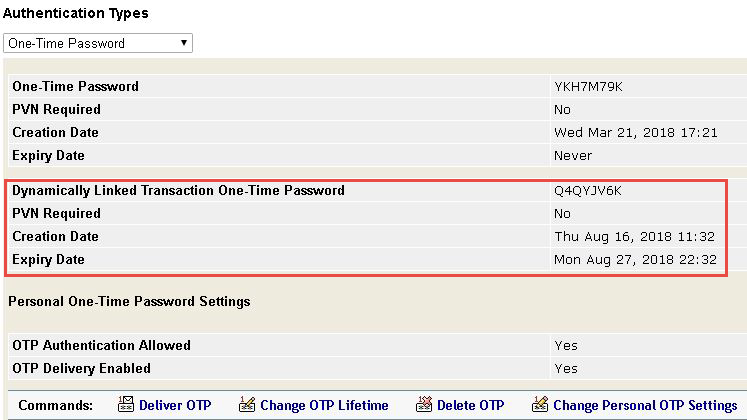
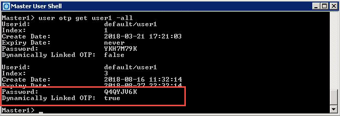

|
IdentityGuard Server 13.0 Administration Guide |
|
IdentityGuard Server 13.0 Administration Guide |
This feature provides compliance with European Banking Authority (EBA) Regulatory Technical Standards for Strong Customer Authentication, Article 98 of Directive 2015/2366 (PSD 2) (see Article 5, Dynamic Linking). Briefly, the standard states that when a digital one-time password (OTP) is used to verify a transaction, the following conditions must be met:
● The payer must be made aware of the amount of the payment transaction and the payee.( Entrust IdentityGuard OTPs meet this condition by default when transaction details are provided.)
● The OTP must be specific to the transaction; the OTP cannot be used for any other kind of authentication. (The policy described in the following procedure generates this transaction-specific OTP.)
● No changes can be made to the amount or the payee or the OTP becomes invalid. (Entrust IdentityGuard OTPs meet this condition by default.)
To enable dynamically linked OTPs
1. Log in to the Entrust IdentityGuard Administration interface as the administrator.
 On the
Windows computer where Entrust IdentityGuard is installed
On the
Windows computer where Entrust IdentityGuard is installed
2. Select Policies on the menu bar.
A list of all policies appears on the List Policies tab.
3. Under Policy Category, select Transaction from the list.
4. Click Edit Policy.
5. Set the Use Dynamic Transaction Linking policy to True.
6. Configure OTP policy settings, as required. See Set policies for out-of-band OTPs. Default values are appropriate for most settings, but be aware of the following.
OTP Length and Cell Alphabet – Ensure that the settings for these policies are not so limited that it increases the risk of the same OTP being generated more than once.
OTP Delivery Enabled – Enable this policy to send OTPs by an out-of-band delivery method. It is not enabled by default.
Number of Outstanding Dynamic OTPs – The value of this setting is ignored when dynamic linking of OTPs is enabled (in Transaction policies) and the OTP is generated for a challenge that includes transaction details. In that case, Entrust IdentityGuard generates only one OTP for the linked transaction verification challenge. The value of this setting is always used for authentication challenges (which do not contain transaction details) even if dynamic linking of OTPs is enabled. The default value is 1.
7. Click Save Changes.
The only difference that users will see when using a dynamically linked OTP is that the text message or email that delivers the OTP states (by default) that the OTP is dynamically linked to the transaction described in the message and can be used only to authenticate that transaction. An attacker who attempts to modify any of the details in the transaction will find that the OTP has become invalid.
Entrust IdentityGuard administrators can see a user's dynamically linked OTPs through the Administration interface and the Master User Shell.
In the Administration interface, locate the user and view their account information. From the Authentication Types drop-down list, select One-Time Password.

In the Master User Shell, enter the command user otp get <username> -all.
